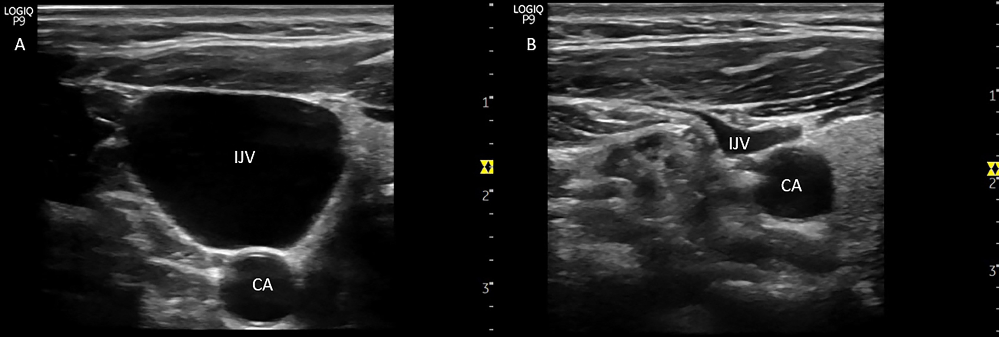
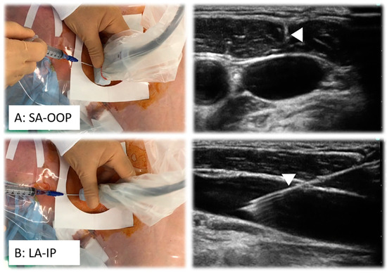

Ultrasound guidance for CVC placement reduces mechanical complications (arterial puncture, pneumothorax, hematoma) by 57–71% vs. landmark technique. Real-time guidance is superior to static marking. Recommended by NICE, AHRQ, ACEP, ASA, ACC/AHA.
| Site | Probe | View | Advantages | Key Complications |
|---|---|---|---|---|
| Internal Jugular (IJ) | Linear 7.5–10 MHz | Transverse (targeting), longitudinal (wire) | Direct visualization, no PTX risk, compressible if arterial puncture | Carotid puncture, hematoma, malposition |
| Subclavian/Axillary | Linear or curvilinear | Axillary vein (lateral) preferred for POCUS | Lower infection rate (long-term), patient comfort | PTX (subclavian), arterial puncture, thoracic duct (left) |
| Femoral | Linear | Transverse (NAVEL: Nerve, Artery, Vein, Empty, Lymphatics) | No PTX, accessible during CPR, predictable anatomy | Higher infection rate, DVT risk, inferior epigastric artery (high stick) |
Vein: compressible, non-pulsatile, augments with Valsalva, larger head-down. Artery: non-compressible, pulsatile, pulsatile Color Doppler waveform. Blind arterial puncture with a dilator is the most preventable CVC catastrophe.


Smaller, more mobile vessels favor a high-frequency linear probe at shallow depth and a shorter, smaller-gauge catheter sized to the vessel (e.g., 22–24G). An out-of-plane short-axis approach is often preferred for tip control in small pediatric vessels; consider a dedicated pediatric access kit when available.
POCUS guidance reduces attempts and increases first-pass success, particularly in shock, obesity, and vasopressor-dependent patients. Radial artery standard; femoral, brachial, and dorsalis pedis as alternatives.
In hypotensive patients, radial artery may be 1–2 mm. Use highest frequency probe. Optimize gain — artery appears as pulsatile black circle. In profound shock: femoral artery (3–5 mm) is more accessible and larger.
Valuable in difficult-access patients (obesity, IVDU, edema). Target deep brachial or basilic veins (4–6 cm depth) with long catheter (45–65 mm).